Llevo toda la tarde en el Editor de Mapa que había construido para el juego: acomodo antorchas, ajusto trampas, decido dónde aparece cada enemigo. Cierro conforme. Abro de nuevo para seguir.
Y no está. Una tarde entera de trabajo, desaparecida.
"Lo voy a tener que hacer todo de vuelta porque sos un bólido y me lo borraste... Necesito que esto se guarde."
— yo, 3 de agosto de 2026, 00:32
Ese susto terminó siendo el punto de partida de este postmortem. No porque perder trabajo sea algo lindo de contar, sino porque fue el momento en el que más aprendí de todo el proyecto: sobre guardado de datos, sobre confiar ciegamente en un flujo que nunca había puesto a prueba, y sobre cómo reaccionar cuando algo se rompe en medio de un desarrollo con fecha de entrega.
"La Cripta de Nekkman" es un dungeon-crawler top-down que construí como TP2 de Diseño de Videojuegos en Image Campus: tres salas, tres tipos de enemigo con IA propia, sistema de hechizos, trampas, un editor de mapa y un editor de parámetros hechos a medida, y una capa narrativa sobre un nigromante y su pacto con un dios oscuro. Lo desarrollé en seis semanas, trabajando con Claude Code como compañero de desarrollo —lo que en la jerga se llama "vibecoding"— y aplicando en el camino la teoría de diseño de niveles y balanceo que estaba viendo en paralelo en la cursada.
El concepto nació el 14 de julio como un plataformero simple. A las pocas horas ya había cambiado a topdown web, y esa fue la única decisión de arquitectura que se sostuvo sin moverse durante todo el proyecto. La preproducción fue intensa: en un solo día armé y descarté tres versiones de formulario de diseño hasta llegar a un pipeline que funcionaba de punta a punta —un formulario, un JSON de respuestas, un script en Python que generaba automáticamente el documento de diseño (GDD) y el primer beat chart—. Fue la pieza de la que más orgulloso quedé de toda la etapa de preproducción: automatizar la parte más tediosa del proceso para poder enfocarme en las decisiones de diseño en sí.
El código arrancó el 20 de julio, sobre un GDD ya escrito. El jugador nació siendo, literalmente, un rectángulo verde —apodado "Yamel" en los comentarios del código, un nombre que le iba a durar casi dos semanas sin que nadie afuera lo supiera.
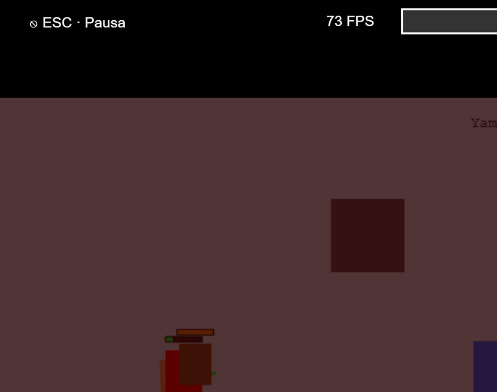
Los primeros días fueron los de mayor densidad de mecánicas: combate direccional, un sistema de trampas, y la decisión que más impacto tuvo en todo el desarrollo posterior —crear un panel de "Editor de Parámetros" para poder ajustar variables del juego en caliente, sin recompilar nada. Esa herramienta, pensada en un momento para resolver un problema puntual de balance, terminó siendo el corazón de todo el proyecto: cada ajuste de vida, daño, velocidad, luz o mapa terminó pasando por ahí.
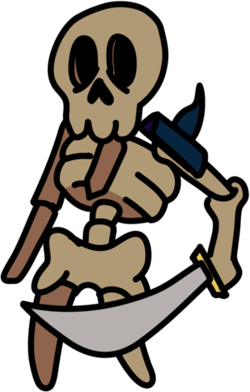
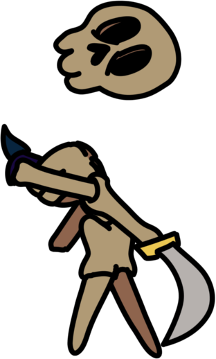
El salto visual más grande llegó recién sobre el final, la madrugada del 3 al 4 de agosto: reemplacé el rectángulo verde por un personaje real (pack "Adventurer", 16 spritesheets, 128 frames de animación entre caminar, correr y dos ataques que alternan siempre) y le agregué un shader tipo CRT y un HUD con sprites de verdad.
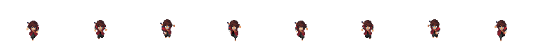
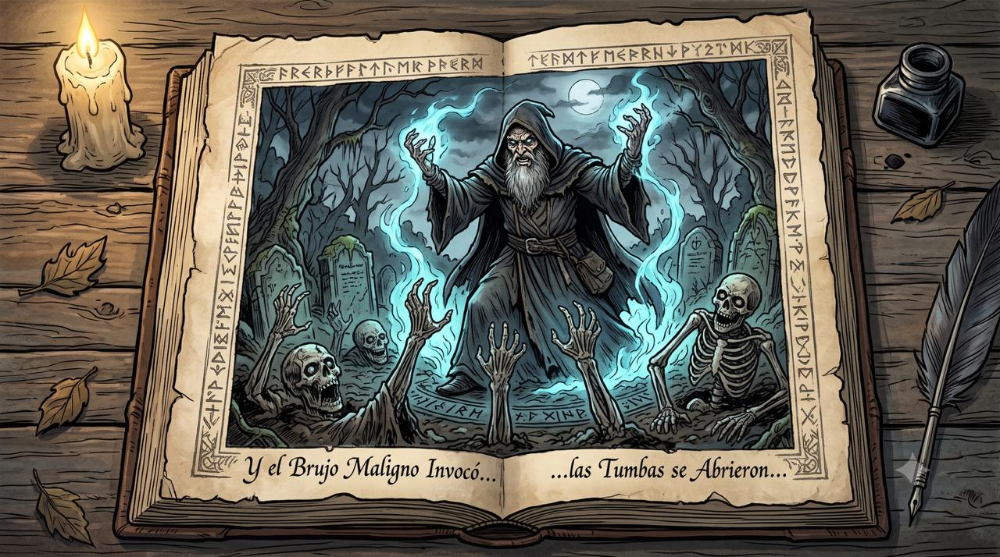
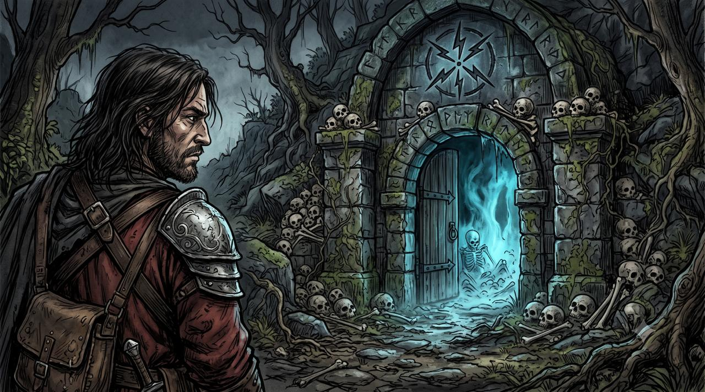
Lo más valioso de este proyecto no fueron las mecánicas que salieron bien a la primera, sino los problemas que tuve que diagnosticar y resolver de verdad. Tres, en particular, me dejaron aprendizajes que pienso llevarme a cualquier proyecto futuro.
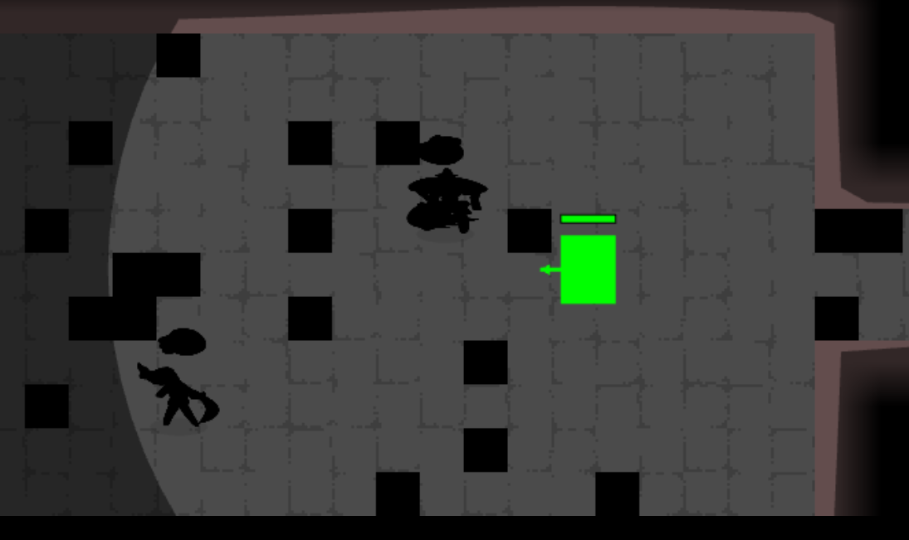
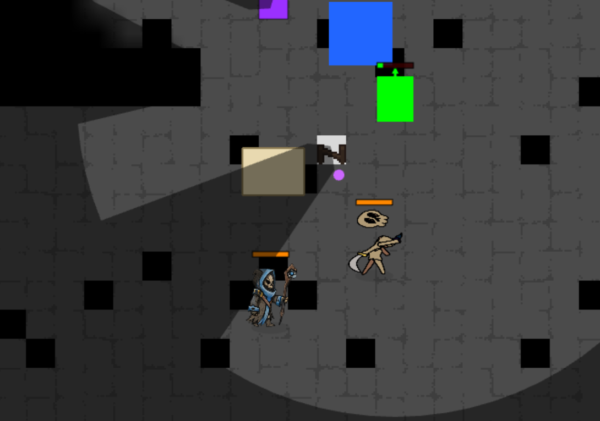
Se descartaron seis hipótesis distintas —sprite mal recortado, alfa rota, un bug de datos verificado celda por celda— hasta llegar a la conclusión de que probablemente era caché del navegador. Lo que me llevo de ahí no es la causa (nunca la tuve del todo clara), sino el proceso: aprendí a investigar de forma sistemática, descartando hipótesis una por una en vez de probar arreglos al azar, y a aceptar que a veces hay que cerrar un bug con la mejor explicación disponible y seguir adelante.
La prueba de que había pasado de verdad quedó grabada en los propios archivos de configuración: la versión de backup antes del arreglo tenía 109 elementos guardados; la versión actual tiene 247. El arreglo final fue directo — que el editor escriba a disco de inmediato en cada acción, sin esperar nada, y que las configuraciones que sí necesitan ese margen se fuercen a guardar igual si detectan que la pestaña se está por ocultar con algo pendiente.
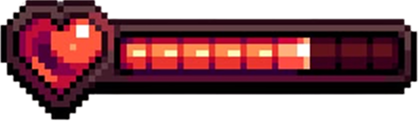
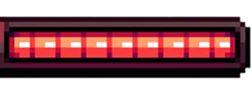
De los tres problemas, este es el que más me cambió la forma de pensar el desarrollo: aprendí que "que se guarde" nunca es un detalle técnico menor, es una decisión de diseño con peso real, y que hay que ponerla a prueba activamente en vez de asumir que funciona porque compiló.
En paralelo al desarrollo del juego, cursaba una clase sobre balanceo de niveles y curvas de dificultad. Trabajé esa teoría en una sesión completamente separada durante tres semanas, sin tocar el juego real todavía — y recién casi al final del proyecto conecté ambas cosas.
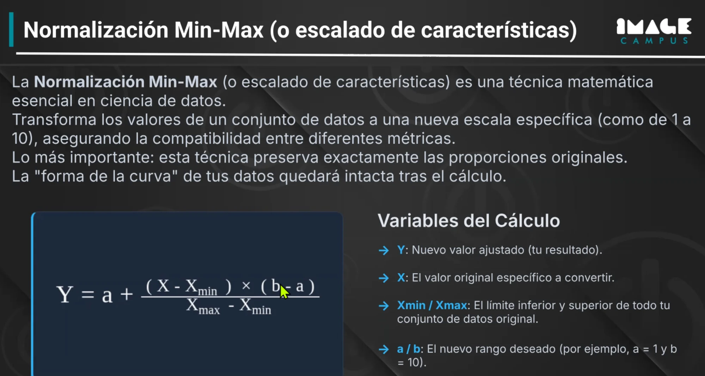
La aplicación fue literal: normalicé cada característica de cada enemigo (vida, daño, velocidad, armadura, rango) a una escala de 1 a 10, la pesé según su impacto real en el juego, y calculé una "constante de dificultad" por enemigo, por trampa y por hechizo. El resultado más honesto de todo el proyecto salió de ahí: la sala de entrada, que se suponía la más fácil, calculó una dificultad más alta que el nivel pensado como clímax final —que en los hechos nunca llegué a terminar de construir.
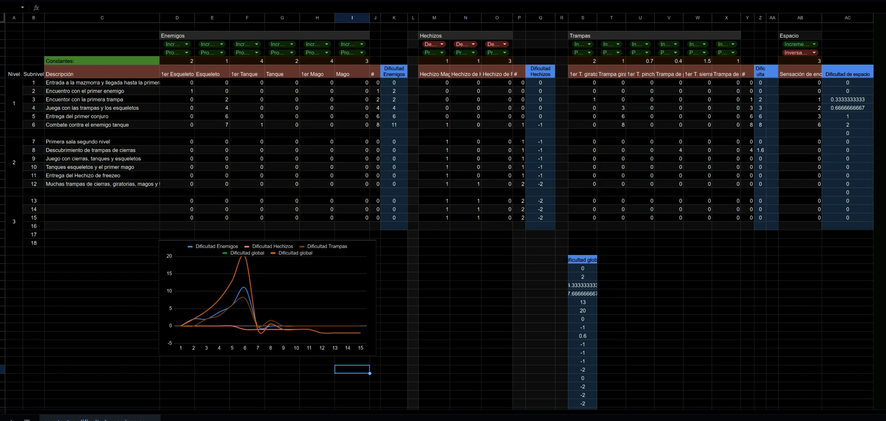
No escondo ese resultado: prefiero mostrarlo, porque es exactamente el tipo de brecha que un buen proceso de diseño tiene que poder detectar y nombrar, con o sin playtesting de por medio. En este caso lo detecté por cálculo. Lo que me faltó —y lo sé— es el paso final: nunca comparé ese número contra la sensación real de jugarlo, porque nunca hice un playtest de verdad, ni siquiera informal.
Lo primero que aprendí, mirando el proyecto entero de una vez, es que el control de versiones y la documentación no son un espejo automático del proceso real: cuando hice mi primer commit de git, el juego ya tenía casi todos sus sistemas centrales funcionando. Semanas de trabajo real habían quedado invisibles para cualquiera que solo mirara el historial. Documentar el proceso a medida que avanza, no al final, es algo que me voy a llevar a cualquier proyecto que venga después.
Lo segundo es más técnico: aprendí, con dos incidentes de por medio, que la persistencia de datos merece la misma seriedad que cualquier otra decisión de arquitectura, no un parche de último momento.
Lo tercero es sobre cómo se traduce la teoría a la práctica. La conexión más sólida de todo el proyecto entre lo que estudié y lo que construí fue el sistema de iluminación: niebla de guerra, antorchas y puntos de interés con su propia luz, aplicando casi de forma literal el concepto de "guía implícita" —el jugador entiende hacia dónde ir sin que nadie se lo explique con texto—. Es la parte del trabajo de la que estoy más orgulloso a nivel diseño.
Y lo último, quizás lo más importante para cualquiera que evalúe este trabajo: sé exactamente qué me quedó pendiente. Un nivel sin terminar. Un playtest que nunca hice. Datos de balanceo calculados con rigor pero nunca subidos al repositorio ni comparados contra la experiencia real de jugar. Prefiero mostrar eso con la misma claridad con la que muestro lo que sí funcionó — creo que ahí es donde más se nota si uno entendió el proceso de verdad, más allá del resultado final.
En la última semana antes de la entrega terminé de construir el Nivel 3 —el que en este mismo documento describo más arriba como "nunca llegué a terminar de construir"—, rediseñé la IA de los enemigos para que dejaran de perseguir en línea recta sin pensar (flanqueo, kiting del mago, memoria de última posición vista), y cacé el bug más difícil de todo el proyecto: una puerta que se veía perfectamente destrabada pero no llevaba a ningún lado, porque el corredor detrás estaba tapiado por 73 bloques invisibles que nunca habían sido iluminados. Encontrarlo requirió teleportar al personaje celda por celda en un navegador de prueba — el mismo tipo de bug silencioso, otra vez, que "se ve bien en pantalla" pero no lo está por dentro.
Lo que no cambió, ni en esta última semana, es la parte que más me falta: el playtesting formal y los CSV de balanceo sin subir al repositorio siguen pendientes. Y jugando la versión casi terminada, un día antes de entregar, encontré varios detalles de jugabilidad más para ajustar —timing de trampas, hitboxes de enemigos— que anoté pero no llegué a tocar por tiempo. Queda como aprendizaje, no como parche de último momento.
Si tengo que resumir en una idea lo que me llevo de todo el proyecto: hacer un juego no se hace solo con instinto. Antes de esto diseñaba en base a lo que sentía que estaba bien, un conocimiento naturalizado de jugar otros juegos, sin poder explicar del todo por qué. Ahora sé que hay una fórmula, un método real, y aprender a usarlo —sobre todo el balanceo de niveles como norte para entender qué está balanceado y qué no— es lo más valioso que me llevo de la cursada. Haber podido construir toda la experiencia en modo "vibecoding" fue, de principio a fin, un desafío interesante y divertido.